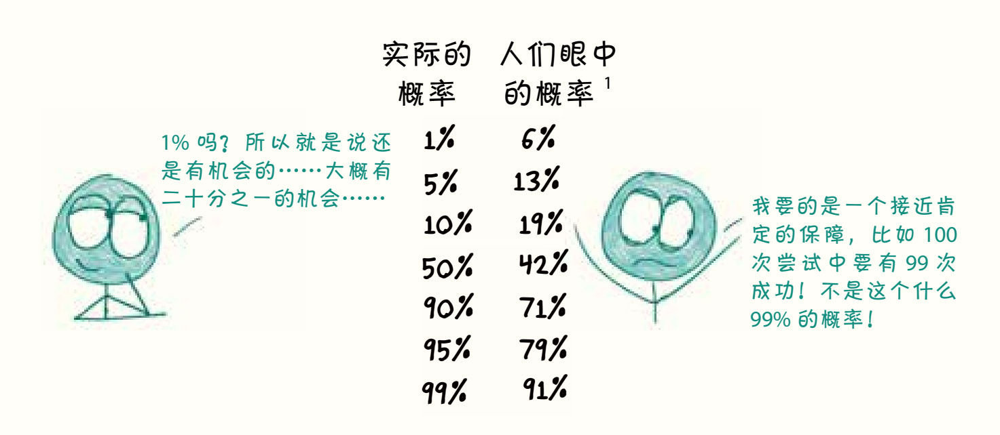
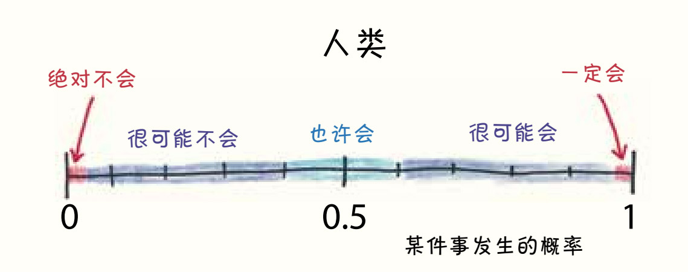
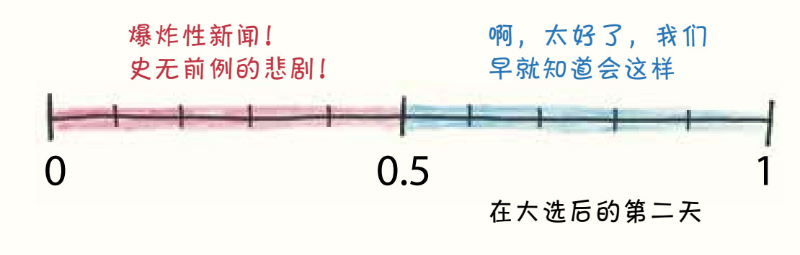
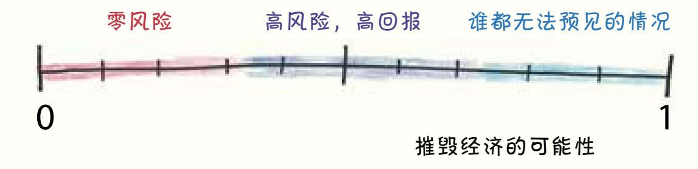
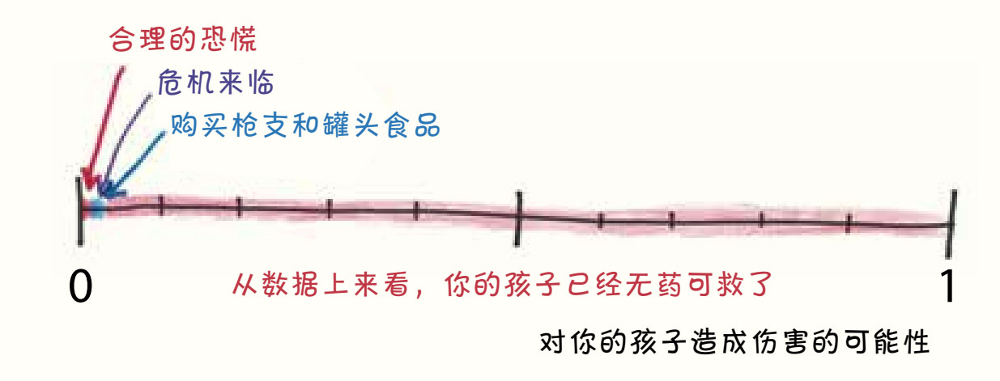
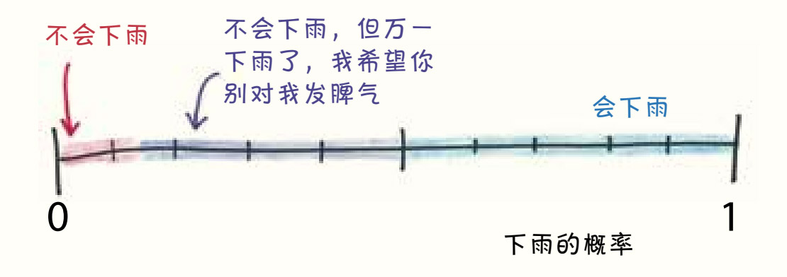
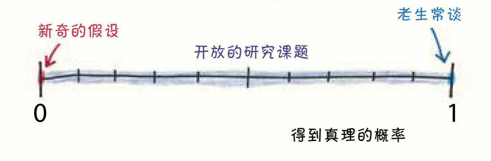
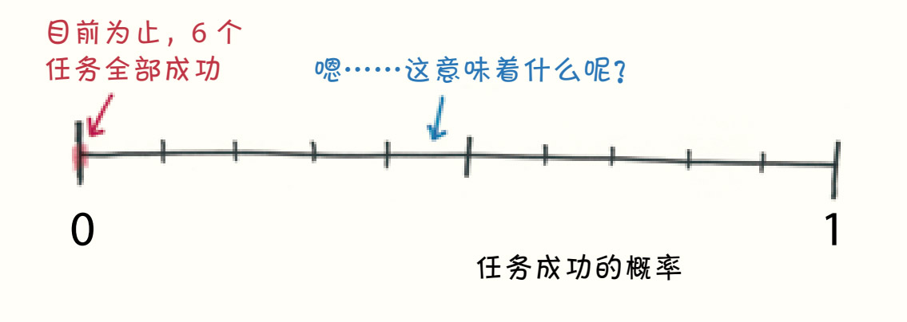
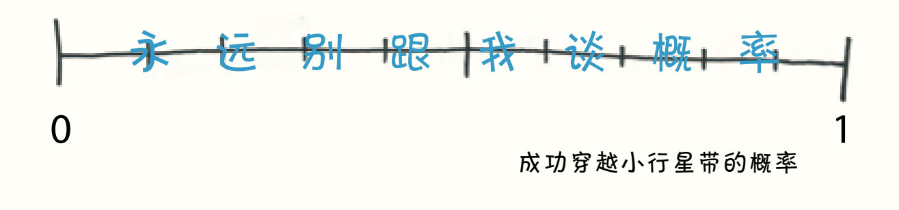

第13章
概率在不同职业中的角色
说人类对概率的理解太“差”未免有些刻薄，而且这种说法把问题简单化了。概率是现代数学一个精妙的分支，概率的世界中布满了悖论陷阱，即使是一个非常基础的问题也可能让专家陷入困境。嘲笑普通人不懂概率就像念叨他们不善于飞行、不能在海里生活或者防火性能不佳一样滑稽。
毕竟，公平地说，人类在概率问题上简直一无是处。
丹尼尔·卡尼曼和阿莫斯·特沃斯基在心理学研究中发现，人们对事件的不确定性缺乏准确的认知，他们常常高估那些小到可以忽略的概率，又低估大到接近必然的概率。

感觉这也没什么大不了的，对吧？你可能会想，概率真的会影响现实生活吗？我们并没有用一生去追求知识性的工具，这些工具可能会让我们在每一刻都要面对的不确定性旋涡中获得一丝丝安稳。
好吧，保险起见，本章是一篇关于不同的人如何看待不确定性的便携指南。概率很难，但这并不代表我们不能从中得到乐趣。

哈喽，人类！你有眼睛、鼻子等各种感觉器官。你会做梦、会笑、会撒尿，当然你不一定是按这个顺序习得这些技能的。
此外，你生活在一个一切都无法确定的世界里。
举个简单的例子：请问你所在的太阳系中有多少颗行星？现在，你会回答说“八个”；在1930年到2006年年初，你的回答会是“九个”（包括冥王星），但如果是在19世纪50年代，你可能会写12本书，分别详细地介绍水星、金星、地球、火星、木星、土星、天王星、海王星、谷神星、智神星、婚神星和灶神星（现在你会将后面四颗称作“小行星”）；如果是在公元前360年，你可能会说出七颗行星：水星、金星、火星、木星、土星、月球和太阳（现在你不会把最后两颗称作行星）。
随着新数据和新理论的出现，你的想法会不断改变。这就是典型的人类行为：当学习和探索知识时，你有很多好想法，但不能保证这些想法会永远正确。你知道，老师、科学家、政治家，甚至你的感觉器官……都可能欺骗你。
概率是不确定性的语言。它会量化你知道的、你怀疑的、你怀疑你知道的和你知道你怀疑的，它用一种清晰、定量的语言表达这些信心的细微差别。至少，我是这么想的……
政治新闻记者

哈喽，政治新闻记者！你的工作是报道即将到来和刚刚落幕的大选。在没有选举的日子里，你也会写些关于“政策”和“治理”之类的文章。
不过，你看起来似乎很困惑——一些几乎不可能发生的事情竟然也能发生。
这个世界以前不是这样的。曾几何时，你会把选举看作充满无限可能的神奇时刻。你故意淡化最有可能的结果，以便制造悬念，让人们觉得每场选举都是靠最后半天的冲刺赢得的。2004年大选之夜，乔治·W.布什以10万张选票的优势在俄亥俄州选区中领先，这时明明只剩下不到10万张选票没有计数，你却说这场选举依然“难分伯仲”。当概率模型算出巴拉克·奥巴马在2012年赢得大选的机会高达90%时，你仍说这场竞选“胜负难料”。
可是后来，在2016年的大选中，唐纳德·特朗普击败了希拉里·克林顿2，你的世界观被颠覆了。第二天醒来时，你觉得自己经历了一个量子奇点，就像看到了一只凭空出现的兔子。但对于概率学家内特·西尔弗（Nate Silver）和他的同道中人来说，这只是一个中等程度的意外，一个发生概率为三分之一的事件，就像掷骰子掷到了5个点或6个点一样，没什么稀奇的。
投资银行家

哈喽，投资银行家！你把资产存入银行，也为银行投入资产，你的西装比我的车还值钱。
直到20世纪70年代，你的工作还相当无聊。3你就是个资金的漏斗，把钱投进“股票”或“债券”。股票惊险刺激，债券平淡无味，而你是人类与它们之间的纽带。
而到了现在，你的工作就和没经过安全检查的过山车一样刺激。从20世纪70、80年代起，你开始发明复杂的、大家都不太理解的金融工具，尤其不理解的是政府的监管机构。这些金融工具有时会为你带来巨额的利润，但有时又会让你的百年企业轰然倒闭，如同导致了恐龙灭绝的行星一般，给整个经济体留下巨大的创伤。真是惊心动魄！
公平地说，资本配置在资本主义中是一项非常重要的工作，有创造大量价值的潜力。如果你为刻薄的数学老师看不起你的专业而生气，花点时间算算你的工资超过那些刻薄的数学老师的可能性，我想你会发现自己的心情一下子就好起来了。
地方新闻主播

哈喽，新闻主播！你有一头漂亮的头发，发音标准，经常需要和搭档开些做作的玩笑。
你也会被一些几乎不可能发生的事情所困扰。
你报道的通常是危险的寒潮、当地的谋杀案、空气中的致癌物，还有会像电影《异形》里的怪物一样粘在宝宝小胖脸上的劣质玩具。表面上，你报道这些是为了向听众提供资讯，但事实上，你这样做不过是为了引起他们的注意。如果你真的希望人们能够提高警惕，关注统计数据中对儿童成长最大的威胁，就应该提醒人们注意枪支和游泳池造成的家庭事故。可你非但没这么做，反而生动地描绘了绑架和鳄鱼攻击这类概率小而又小的事件。你知道，我们无法把注意力从这些可怕的事情中移开——尤其是当它们被人为发酵的时候。
天气预报员

哈喽，天气预报员！作为电视上的天气预言家，你带着坚定的手势播报天气情况，每次播报的结束语都是“现在，我们把现场交回直播间”。
不过，为了避免人们因天气不如意而迁怒于你，你有时候会在概率上做点小手脚。
当然，你是希望实话实说的。当你说有80%的可能性下雨时，你说的就是事实：根据以往的统计，80%的这种日子都会下雨。但当下雨的可能性降低时，你就会把这个数字放大，毕竟你会担心有人在忘带雨伞后将天气的变化归咎于你，甚至在网上吐槽和谩骂。所以当你说有20%的可能性下雨时，其实下雨的概率只有10%，你提高了下雨的概率4，从而降低自己遭受网络暴力的概率。
或许有一天，人们能更好地理解概率，你也不再害怕说出真相。人们似乎认为“10%”的意思就是“不会发生”。如果他们接受了它的真正含义（每十次中会发生一次），你就不必对真实的概率守口如瓶，可以诚实地说出实际的概率了。而在那之前，你的天气预报还是只能半真半假。
现在，我们把现场交回读者。
哲学家

哈喽，哲学家！你是个怪人，读的书奇怪，写的书更奇怪，和你一块儿混迹于酒吧的朋友中既有基督教牧师，也有犹太教教士。
特立独行的你，自然不会被概率吓唬住。
你喜欢把“很可能”留给经验主义者，转而挖掘其他人认为“几乎不可能”的想法，你问的问题和思考的观点都与常人不同，因为这些想法深奥又晦涩，而且还很可能是错的。但这就是你对这个世界的意义所在！在哲学发展的巅峰时期，哲学家带领着人类发现了诸多全新的领域。比如，从亚里士多德到威廉·詹姆斯，心理学发源于哲学。即使在哲学最糟糕的阶段，哲学家的思考和质疑也能激发和鼓舞我们，这是其他学科都无法望其项背的。
《碟中谍》电影中的特工

哈喽，《碟中谍》（Mission: Impossible）特工！你要完成“不可能的任务”。你是个传奇人物，悬吊在天花板上潜入上锁的金库，戴着吸盘手套攀爬摩天大楼的外墙，向双面间谍解释自己三重间谍的真实身份。
不过，你似乎也不明白“不可能”到底意味着什么。
“不可能”既不代表“像季度收益报告那样规整而无趣”，也不代表“非常罕见”“相当困难”或“哟，幸好刀锋停在了离汤姆·克鲁斯眼睛一毫米远的地方”。它的意思是“一丝可能性都不存在”。然而，这种“不可能”却一直在发生。《碟中谍》系列电影的标题有多不诚实，电影主题曲的旋律就有多动听。
不过，你不是唯一犯这类错误的人。这种似是而非的问题在小说界十分常见。《胜利之光》（Friday Night Lights）是我最喜欢的电视剧之一，这部剧描绘了得克萨斯州一个小镇的平凡生活，探索了普通人的人性挣扎。然而，即便是在这个看起来可信度很高的故事里，千载难逢的戏码也在每场橄榄球比赛中屡屡上演：长达80米的触地传球、球门线上低级失误，或者本该进门的球被横梁弹飞。这不禁让我陷入了思考：到底是我们把不可能的幻想投射到了电视屏幕上呢，还是电视屏幕把这些幻想植入了我们的内心？
“千年隼号”的船长

哈喽，“千年隼号”的船长！你是一方恶霸，却心地善良。你的生活伴侣是一只2.43米高、身披弹药袋的太空狗。
还有，你完全拒绝谈概率。
你不是深思熟虑的人。作为一个走私犯，一个帝国杀手，拼的就是速度和蛮勇。你杀害格里多（Greedo）时果断地一击致命，而对手正是死于自己的犹豫不决。你的一生都在枪林弹雨中度过，战场上没有概率学家。对你来说，花费力气去计算概率是一种拖累人的行为，就像允许旁边有个神经质的金色机器人不停地絮叨：“天哪！不能这样！”“主人，有句话我不知该不该说……”
我想，每个人心中都有你的影子。有条件冷静而仔细地进行评估时，概率对我们很有用，但有时候我们也需要必胜的信念，哪怕这种信念并没有坚实的、可以定量的事实支撑。在需要依靠本能行动的时刻，如果总是受缚于看似可信的概率，我们的灵魂将永远在需要冒险时裹足不前。在这种时候，我们要做的其实是忘掉数字，坚信自己。